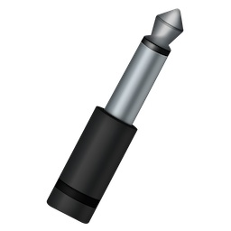
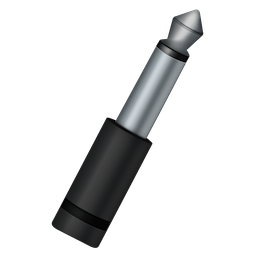
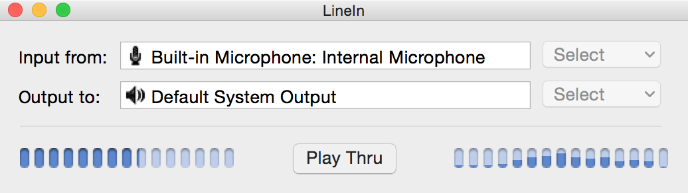
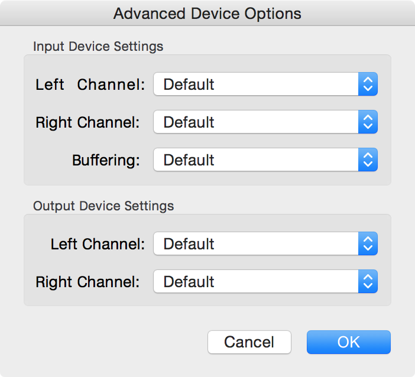
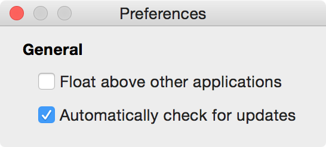

LineIn 2.3 Manual

LineIn is a simple application for OS X, designed to enable the soft playthru of audio from input devices. In simpler terms, you can use LineIn to hear sound coming in through a microphone or any other device plugged in to your Sound In port, just as was once available with OS 9's "Play input through output device" option. It can be used with Audio Hijack to record audio from external devices.
LineIn provides play thru of audio from input devices to output devices.
Latency be gone! We've made improvements to limit latency of processed audio during long audio device capture sessions, and also to prevent static and skips.
You can now toggle play-thru via the menu bar. Just look for the "Enable/Disable Play-thru" menubar option.
• A Macintosh computer
• OS X 10.7 or higher
To install LineIn, just drag it from your download folder to your Applications folder, or wherever you'd like to keep it.
To uninstall LineIn, simply delete the application.
LineIn is free software. Enjoy! If you like LineIn, try out our other applications at http://rogueamoeba.com/
LineIn v2.3
Released 09.03.2014
- Latency be gone! We've made improvements to limit latency of processed audio during long audio device capture sessions, and also to prevent static and skips.
- You can now toggle play-thru via the menu bar. Just look for the "Enable/Disable Play-thru" menubar option.
- Some small UI changes and improvements have been made.
- An emergency update, necessitated by immediate changes Apple has made to their Gatekeeper system, restores compatibility on Mac OS X 10.9.5 and higher.
LineIn v2.2
Released 06.25.2014
- The LineIn window can now be closed, with a menu item to re-open it.
- LineIn now requires Mac OS X 10.7 (Lion)
LineIn v2.1.1
Released 04.23.2013
- Several bug fixes and improvements have been made.
- LineIn's icon has been changed.
LineIn v2.1
Released 09.22.2011
- Several bug fixes for Mac OS X 10.7 (Lion) have been made.
- LineIn now requires Mac OS X 10.7 (Snow Leopard)
- LineIn now displays spectrum meters as well as level meters.
LineIn v2.0.3
Released 10.19.2007
- LineIn now supports Mac OS X 10.5 (Leopard)
LineIn v2.0.2
Released 01.20.2006
- LineIn is now a Universal Binary
LineIn v2.0.1
Released 10.25.2005
- auverse/auline: fixed silence gen channels
- auverse/rbuffer: finally fixed the oldest crashing bug ever
- Silence Input/Output
LineIn v2.0
Released 01.18.2005
+ LineIn has been completely revamped with a new interface and many new options.
LineIn v1.2
Released 10.20.2003
+ Full OS X 10.3 (Panther) support
LineIn v1.0
Released 04.03.2003
+ First release - it's all new.

When LineIn loads, you'll see the main window shown above. This window allows you to select the Input device from which to pull audio and the Output device to/through which it will be played. For adjusting advanced settings such as device channels, click the Advanced button. Most of the settings found here should generally be left in their default states.
Passing Audio Through
To pass audio through an output device, you first need to set an Input device from which to pull audio. Then the Output device must be set - this is the device through which the audio will play. Finally, click the Pass Thru button, and any audio played through the Input will run through the system and be heard via the Output. That's it!
The main window seen above houses all of LineIn's main settings.
Setup Controls
Input From: Select the desired input device, from a list provided by the system.
Output To: Select the desired output device, from a list provided by the system.
Pass Thru - When clicked, audio coming into the selected Input will be played audibly through the selected Output.
Level Meters - The level meters to the left of the Pass Thru button show activity when audio is being passed through LineIn.
Spectrum Meters - The spectrum meters to the right of the Pass Thru button show activity when audio is being passed through LineIn.

Advanced Controls
Input Device Settings
Left Channel: For devices with more than two channels, select the channel which will serve as the left.
Right Channel: For devices with more than two channels, select the channel which will serve as the right.
Buffering: Adjusts the size of the audio buffer for the input, in frames. A larger buffer is less prone to skipping but has higher latency (delay), while a smaller buffer has lower latency but may be more prone to skipping. This is best left at Default to start.
Output Device Settings
Left Channel: For devices with more than two channels, select the channel which will serve as the left.
Right Channel: For devices with more than two channels, select the channel which will serve as the right.
Buffering: Adjusts the size of the audio buffer for the output, in frames. A larger buffer is less prone to skipping but has higher latency (delay), while a smaller buffer has lower latency but may be more prone to skipping. This is best left at Default to start.

Interface:
Float above other applications - Turning this on causes the LineIn window to float on top of other windows, even when the application is selected.
Other:
Automatically check for updates - With this on, LineIn compares its own version number with the most current version available from our server. Leave this on to stay up-to-date.
We now present the conclusion to the LineIn Manual
User License - Let your lawyer explain it all to you.
Contact - How to get in touch with Rogue Amoeba.
LineIn Homepage
http://rogueamoeba.com/freebies
Rogue Amoeba Homepage
http://rogueamoeba.com
LineIn Support
freebies@rogueamoeba.com
Join the Rogue Amoeba low-traffic announcement list. There's no spam, EVER. It's as simple as that.
http://rogueamoeba.com/company/lists/